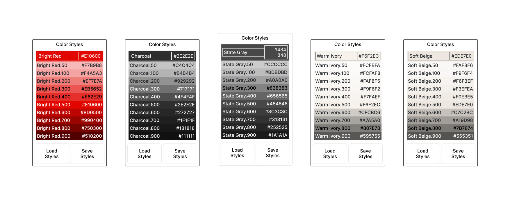
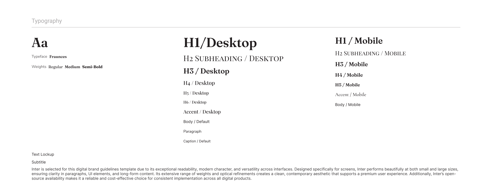
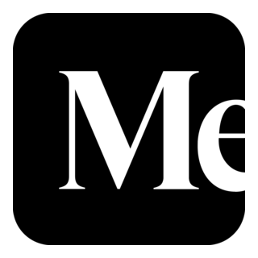

At the very beginning of a project, there’s this quiet moment where nothing exists yet — no sections, no layout, no animations. Just a story that wants to live somewhere on the internet.
And that’s exactly where I start: with a moodboard.
People often see moodboards as “nice pictures on a page”. For me, it’s the emotional blueprint of the whole website. It’s where the project gets its heartbeat before I ever open a code editor.
I don’t begin with components or breakpoints. I begin with the feeling my client wants their users to step into.
🎥 So… what does a moodboard actually do for me and my clients?
When I work with clients — especially creatives like screenwriters — I’m not just collecting content. I’m trying to understand their world.
I ask them:
- What websites feel like “you”?
- What kind of energy do you want on your site — calm, sharp, warm, mysterious?
- What should people feel in the first 3 seconds?
Their answers turn into colors, textures, typography and imagery. The moodboard is the first place where all of this lands together.

Sometimes the board looks like a movie poster, sometimes like a film contact sheet. Either way, it always reveals the soul of the project long before I touch WordPress.
Moodboard in motion
“Before I design the page, I design the feeling.”
This is the moment when the project stops being “just a website” and starts to feel like a scene from a film.
🎞️ What moodboards help me decide
1 — Turning feelings into visuals
Before I pick a single hex code, I ask: what should this brand feel like? Cozy and soft like Warm Ivory? Intense and bold like Bright Red? Grounded and serious like deep Charcoal?
Those answers are what shape the board — not trends, not templates.

2 — Making sure we’re actually on the same page
Words like “minimal”, “bold” or “elegant” mean very different things to different people. A moodboard removes that confusion instantly.
The client looks at it and says:
“Yes, this feels like me.” or “No, this is not my world at all.”
Both answers are perfect, because they save us from weeks of guessing later.

3 — Avoiding big redesigns at the end
The nightmare scenario: the whole website is designed, and only then someone says, “Oh… I imagined something totally different.”
A moodboard kills that nightmare. We do all the “is this really you?” work right at the start.
📸 How I actually build my moodboards
Here’s what my real process looks like — no mystery, just my favourite part of the job.
Step 1 — Conversation, not a questionnaire
I listen. I ask about their work, their audience, what they hate on other sites, what they secretly love. This is where I collect the raw material for the mood.
Step 2 — Typography casting
Fonts are characters. Playfair Display, Inter, Cormorant — each one feels different on screen. At this stage I pick who plays what role: who is the headline, who is the quiet paragraph voice.

Step 3 — Visual story
I search through Unsplash, generate custom scenes with DALL·E, mix textures, lighting and little cinematic details. At this point nothing is “final”, but the atmosphere is already very real.
Step 4 — One board, one story
All of this comes together into one board. That’s the moment when the project stops being “an idea for a website” and becomes an actual world we can build inside.
🌹 Why I’m obsessed with this step
Moodboards are the most human part of my workflow. No dev tools, no tickets, no plugins — just story, feeling and visuals.
They help me stay inspired through the whole build and help my clients feel seen and understood from day one. Everyone relaxes a little when they see their world appear on screen for the first time.
🎬 Final frame
Moodboards are not “extra”. They are the first draft of the story — not the design, not the code. The story.
And in web design, just like in filmmaking, the story quietly decides everything that happens next.

Hi, I’m Dasha — a UX/UI designer and front-end developer who starts every project with a moodboard and finishes it with a clean, hand-coded website.

Read this article on Medium →